Hacking the Museum
What could emerging technologies, AI included, do for the visitor journey at Tate Modern and Tate Britain?
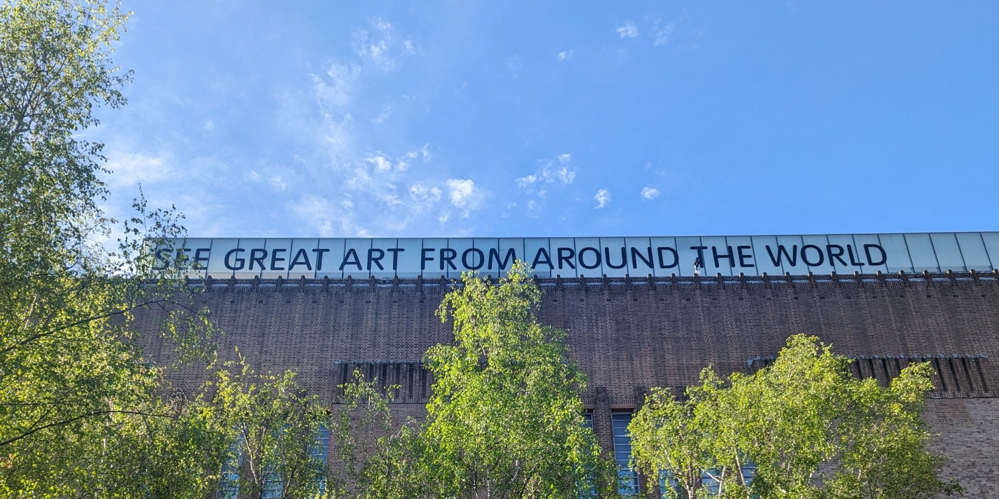
- ROLE
- Brooks International Fellow
- HOST
- Tate Visitor Communications · Audience & Innovation Directorate
- RESIDENCY
- Delfina Foundation, London
- WHEN
- April–October 2024
Visitor expectations are changing fast. Before adding new tools, a museum needs a clear picture of the journey visitors already make.
Tate commissioned this research to look at how new digital tools could improve the visitor experience, online and onsite. That meant understanding what Tate's audiences expect, mapping every touch point across both London sites, and looking at what the rest of the sector is doing.
The outcome was a digital engagement framework, with recommendations for using emerging technologies to build a seamless, personalised visitor journey from end to end.
HOW THE RESEARCH RAN
- 01Visitor journey mapsEvery touch point, from planning a visit at home to signage, staff and resources on the gallery floor.
- 02Front-of-house survey73 responses from the people who answer visitors' questions every day.
- 03Sector benchmarkingCase studies of museums across the UK and EU, including ACMI, ZKM, Centre Pompidou and Musée d'Orsay.
- 04Co-creation workshopYoung people from Tate Collective Producers imagined new tools for the gallery floor.
- 05FrameworkRecommendations for a digital engagement framework across the whole visit.
Visitor journey maps
Personas followed from getting to know Tate, through the visit, to what happens after: where they look for information, which touch points they meet, and where the journey breaks.
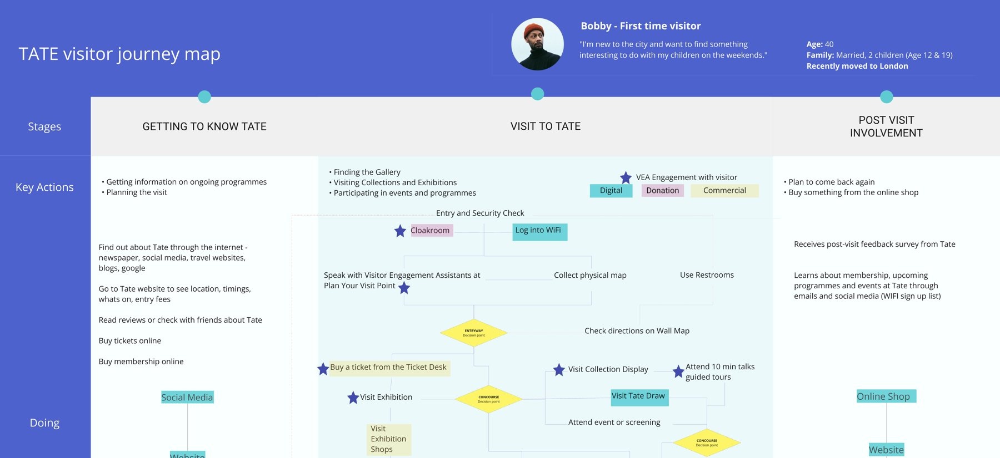
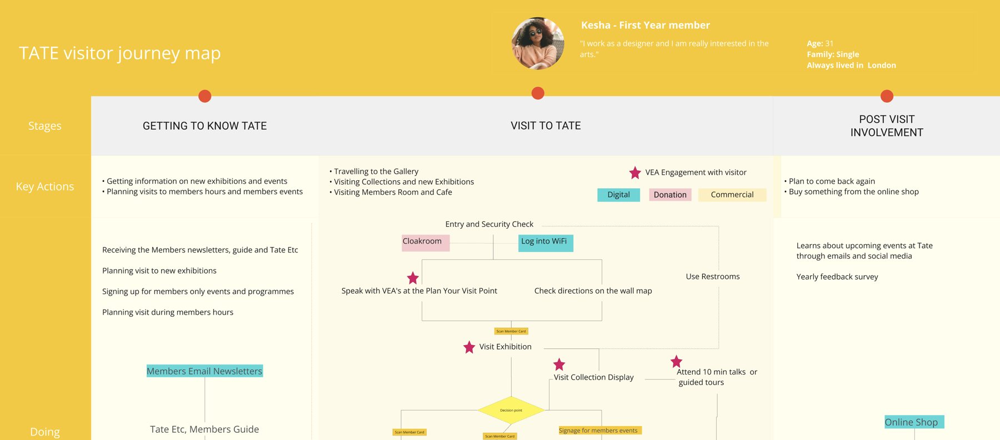
Designing with Tate Collective
Young people from Tate Collective Producers worked through visitor problems, sketched ideas and pinned them up, then argued for the tools they would actually want on the gallery floor.
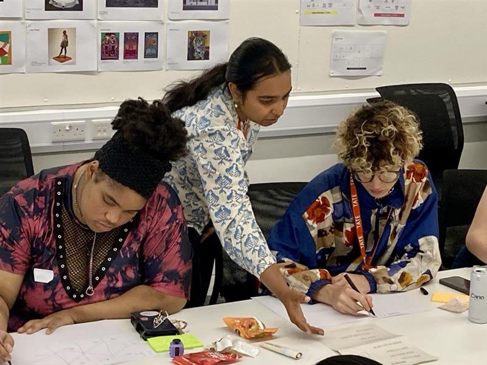
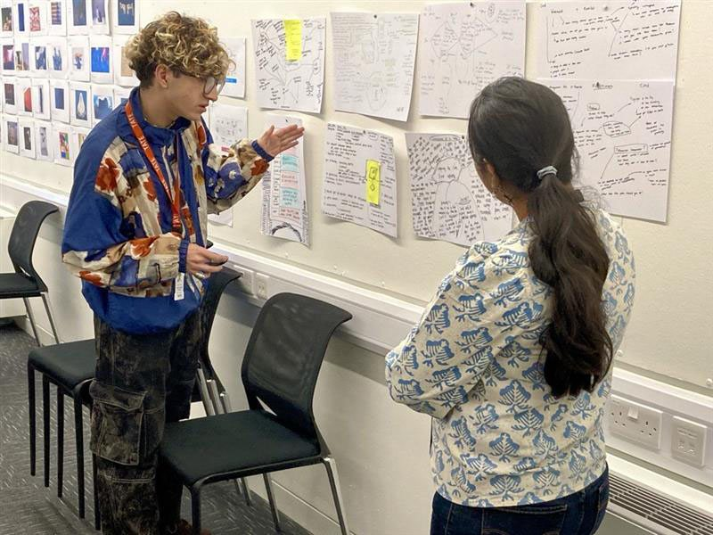
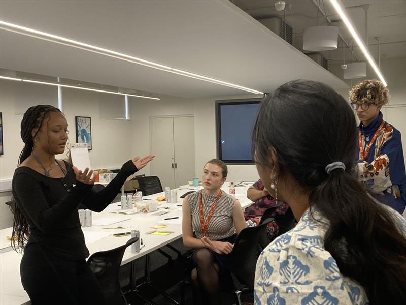
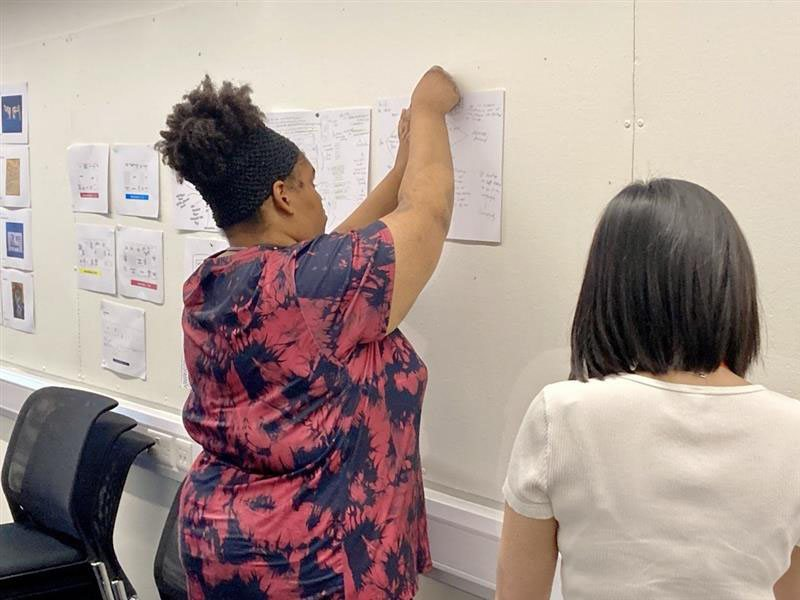
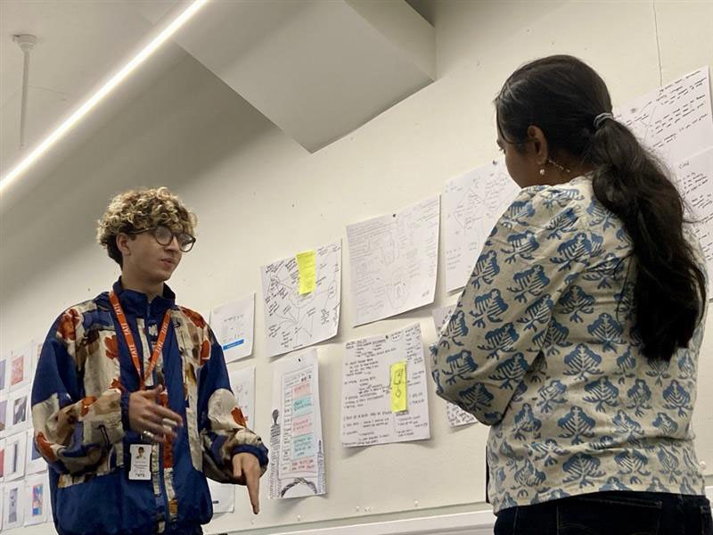
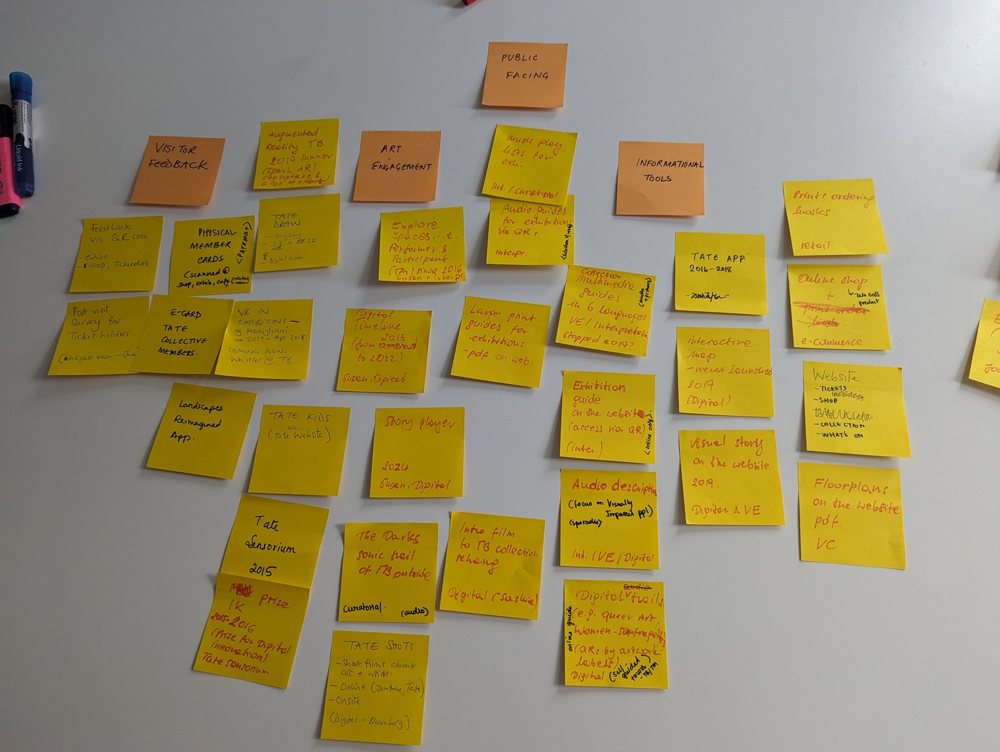
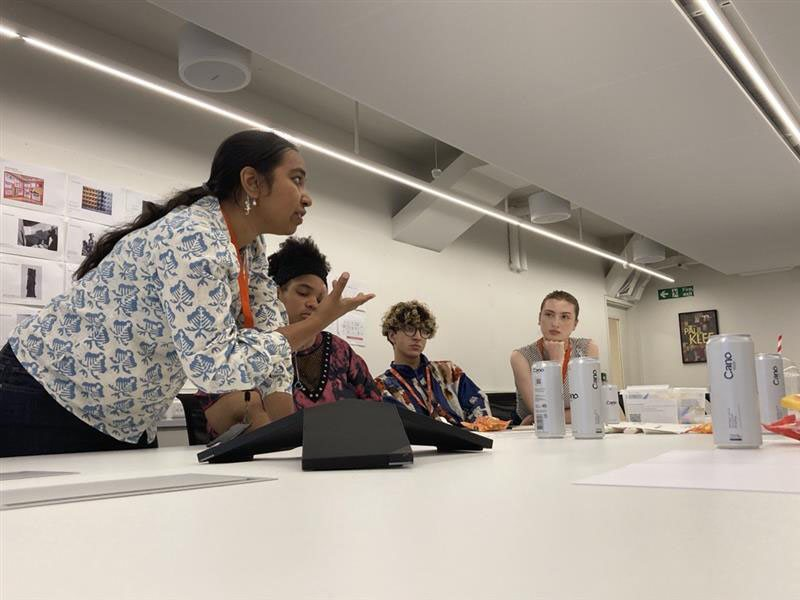
What the sector is doing
Case studies of digital tools in museums across the UK and Europe, starting at home with Tate's own interactive timelines and drawing studios.
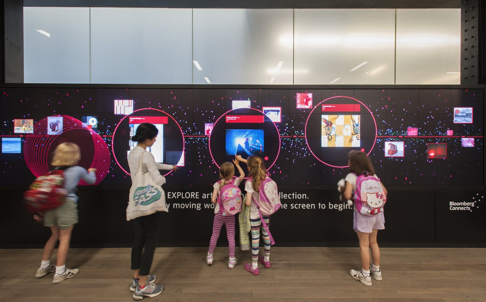
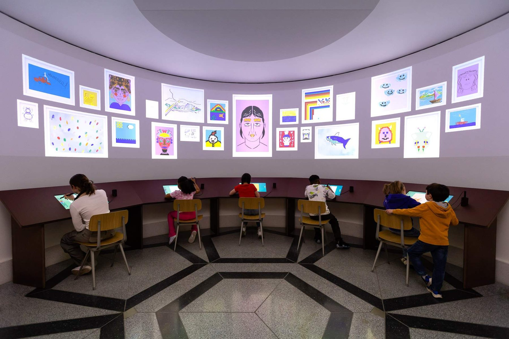
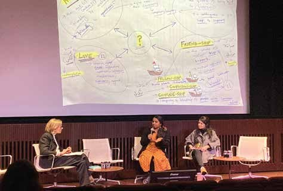
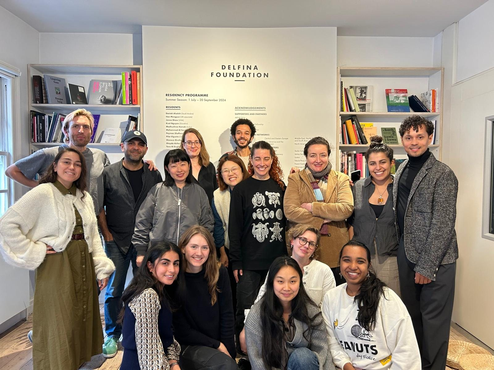
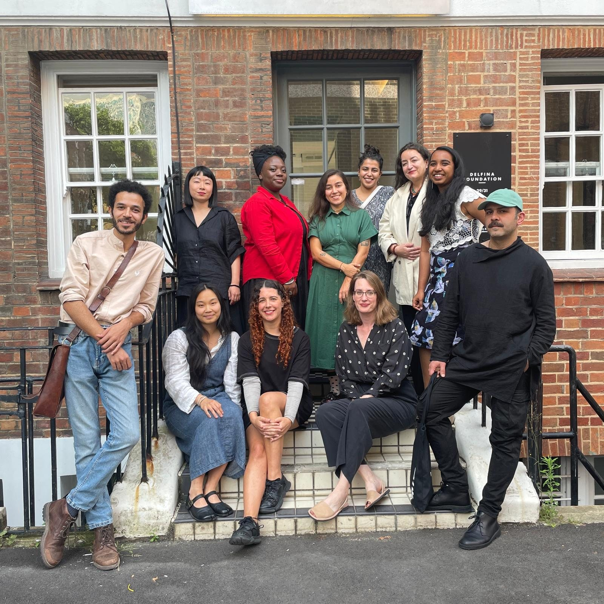
SHARED AT
The full report is not public. Write to me if you would like to talk about the findings.
CREDITS & SUPPORT
Hosted by Residency
Residency